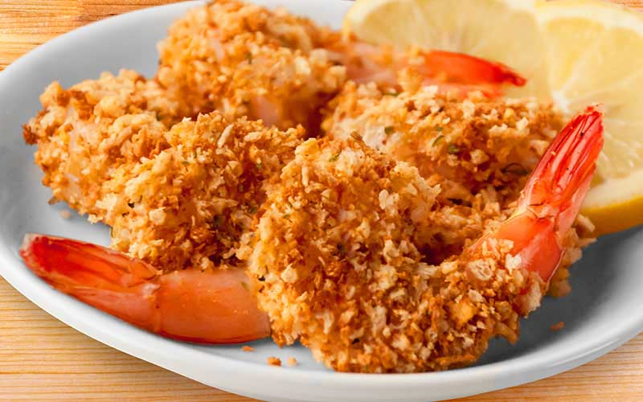
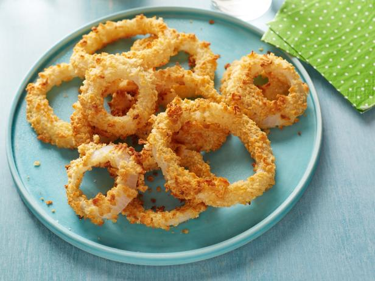
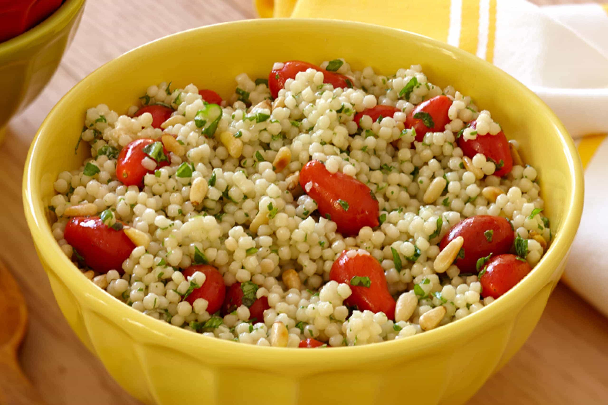

Medium Lunch Recipes
Recipe: Air-fried Breaded Shrimp
| Price: | Time: |
|---|---|
| $ | 15-20 mins |

Image Source
Ingredients:
- 1/2 cup all-purpose flour
- 1/2 teaspoon seafood seasoning
- 1/2 teaspoon dill weed
- 1/2 teaspoon pepper
- 1/2 cup milk
- 1 teaspoon hot pepper sauce
- 1 Egg
- 1 cup panko bread crumbs
- 1 pound uncooked shrimp, peeled
- Cooking spray
- (Optional)
- Lemon wedges
- Seafood cocktail sauce
Instructions:
- Preheat air fryer to 375 degrees
- mix flour, seasoned salt, dill weed and pepper in a bowl
- In a seperate bowl, whisk the egg, milk, and hot pepper sauce until combined
- Place bread crumbs into another bowl
- Dip and coat shrimp fully in flour mixture and then shake off excess
- Dip shrimp itno egg mixture and then bread crumbs
- Pat bread crumbs into shrimp
- Place shrimps in a single layer in the air fryer after spraying coooking spray
- Let rest until golden brown (3-4 minutes for each side)
- Remove and let cool on a plate then dig in!
Video Tutorial:
Recipe: Quick Chili
| Price: | Time: |
|---|---|
| $ | 10 mins |

Image Source
Ingredients:
- 1 large onion
- 1/4 cup egg beaters
- 1/2 cup ctushed Fiber One cereal or bread crumbs
Instructions:
- Preheat oven to 375 degrees.
- Cut edges off onion and remove outer layer
- Cut into 1/2 inch slices and separate into rings
- Fill a small bowl with egg beaters
- Using a blender, blend cereal until a crumb consistency and pour onto a small dish
- Dip each ring into egg and coat with cereal or crumbs and place on a baking sheet with nonstick spray
- Cook for 20-25 minutes flipping rings half way
- Dig in!
Video Tutorial:
Recipe: Couscous
| Price: | Time: |
|---|---|
| $ | 10-15 mins |

Image Source
Ingredients:
- 1 cup of Couscous
- 1 cup of frozen peas and corn
- 1/2 cup of water or vegetable stock
- Salt and pepper to taste
- Optional:
- Dash of hot sauce
- Sliced almonds as garnish
Instructions:
- Bring water or stock to boil in a saucepan. Stir in couscous and peas and carrots
- Add salt and remove from heat
- Let sit for 5 minutes then stir in black pepper and hot sauce
- Dig in!